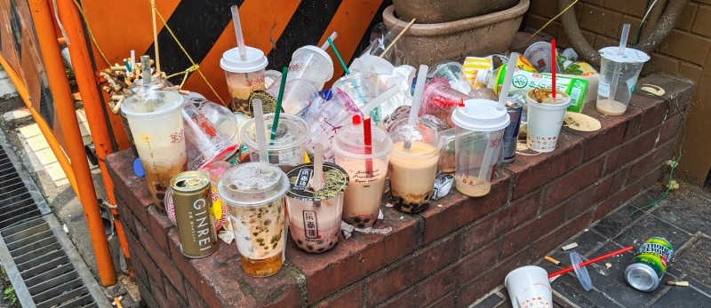

ゴミ箱ないとは言わせない
ゴミ箱位置検索サービス
現在地で探す
マニュアル
虫眼鏡

ゴミ箱位置検索サービス
現在地で探す
マニュアル
PoiMapは周辺地域や指定した地域にあるゴミ箱の位置を表示して案内します。 又、ゴミの種類によってフィルターをかけることもできるので、 捨てたいゴミの種類に応じて表示するゴミ箱を制限することもできます。
PoiMapはゴミ箱の位置を地図上に追加することもできるので、見つけたゴミ箱をユーザー同士で共有することができます。
PoiMapはゴミ箱に対して口コミすることができます。 リアルタイムで更新されているので、現在のゴミ箱の状況等を確認することができます。